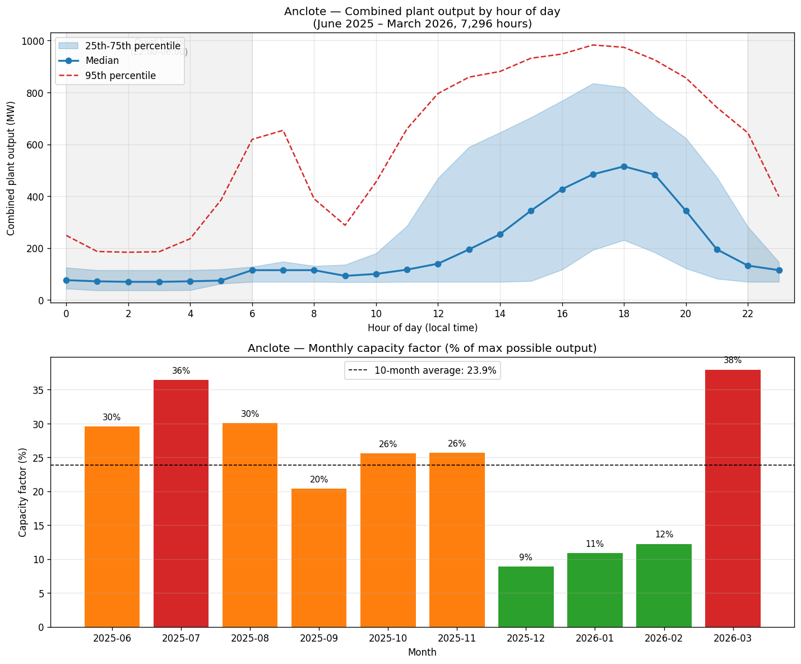

Earlier framing (“occasional peaker, mostly off”) was wrong. EPA CEMS hourly data for 10 months (Jun 2025 – Mar 2026) shows the plant is essentially always running — it idles at minimum load rather than shutting down, because cold-starts are expensive for steam plants.
At idle, the turbine still spins at constant 3,600 RPM and the transformer hums at 60 Hz. Low-frequency background is essentially always present. Tonight’s 6 PM showing is at PEAK LOAD time (~480–515 MW median) — the loudest operating state. If you can’t hear it from the back yard at 6 PM, that’s useful. The real test is a 3 AM return visit.
Build feasibility — confirmed answers (2026-06-16)
Pinellas §138-3501(a)(3) allows height measured from BFE in VE flood zones — your “clock” starts at 13 ft above grade (BFE 12 ft + 1 ft required freeboard), then the R-4 cap adds 35 ft on top. Total effective height: ~48 ft above grade.
What fits: Breakaway parking level (0–13 ft, doesn’t count toward height limit) → Level 1: main living, orangery, kitchen (14–25 ft, 11’ ceilings) → Level 2: bedrooms + cinema room (25–34 ft, 9’ ceilings) → Rooftop terrace to ~47 ft peak. Comfortable headroom.
Confirm on the planning call: Is BFE height measurement standard practice in VE without a special finding?
Two principal dwellings on one R-4 parcel = a duplex, allowed by-right (the lot is 57,055 sf / 100×284 ft — far over the 7,500 sf / 75 ft duplex minimum). No rezone, no variance. The guest house is a normal 3-bedroom apartment — not an ADU (ADUs are capped at 750 sf in this flood zone).
Precision: two separately buildable/sellable lots would require a county Lot Split (BCC approval, max 2 lots). Lots 27 & 28 sharing one tax parcel does not auto-create two buildable lots — but the two-homes-on-one-parcel (duplex) plan doesn’t need a split.
Confirm on the planning call: duplex (two principal dwellings) by-right on this R-4 parcel?
The build is the residential core of the planned Florida compound — main house + orangery + 3-bedroom guest house + ground-level pool + dock — built owner-builder (no general contractor), elevated on pilings for the VE flood zone, using cabinetry/appliances/fixtures already purchased and in storage.
Detailed program and budget live in the private project files. (Earlier automated estimates that floated ~$5M were wrong — they assumed a general contractor, a 3,000 sf guest house, and ignored materials already bought.)
- Is BFE height measurement standard practice in VE zones under §138-3501(a)(3), or does it require a special application or finding?
- On a 1.31-acre R-4 parcel — can I build two principal dwellings (by-right duplex) without a variance or rezone?
- Are Lots 27 & 28 (Plat Book 5/72) eligible for a Lot Split into two separately buildable lots, or is two-dwellings-on-one-parcel (duplex) the cleaner path? (One tax parcel today.)
Quick facts
Hard disqualifier check
- Legal dock access: Pass — Riparian right; inside Aquatic-Preserve 10:1 SF envelope (~1,000 sf for ~100 ft frontage); 538 sf proposed dock well within. Pro feasibility letter: “very well suited.”
- Navigable to Gulf: Pass — ~1 mi to river mouth, ~3 mi to open Gulf, bridge-free (downstream of Alt US-19). ~8–12 min at planing speed.
- Water depth adequate: Marginal — off-channel shore is shallow/shoaling. Dock must reach toward the 9-ft federal channel; may need minor dredging.
- Flood insurance feasible: Pass — New elevated-on-pilings build ≈ $1.2–5K/yr. (Old house = $8–20K/yr — another reason to rebuild.)
- HOA allows boats/dock: Pass — No HOA.
- Seawall rebuildable: Uncertain — County shows “Seawall: No”; dock drawing shows a low existing wall. Aquatic Preserve may require living shoreline over hard seawall. Budget into the build.
- HV transmission lines: Pass — No HV lines within 0.5 mi. Duke 230 kV substation + plant ~1 mi across the river in Pasco.
- Hospital ER ≤20 min: Pass — AdventHealth North Pinellas ~4.5 mi / ~11.6 min (full ER, 168-bed).
- Listing verified active: Pass — $975,000 confirmed. Showing tonight.
No hard disqualifiers. Two marginal items need on-site verify: water depth/shoaling and shoreline condition.
Scores — build thesis (58/80)
| Category | Score | Notes |
|---|---|---|
| Water Access | 4/5 | Lower Anclote, ~1 mi to mouth, bridge-free, 8–12 min Gulf run. Not open-Gulf; off-channel shoaling = 4 not 5. |
| Dock & Boat | 3/5 | Pro feasibility + 538 sf permit-style drawing + $44,743 bounded estimate. Real risk: shallow/shoaling shore, possible dredging, seagrass survey decisive, Aquatic-Preserve permit = 6–12 mo. |
| Seawall / Shoreline | 2/5 | County: “Seawall: No”; natural/shoaling shoreline (low wall per dock drawing). Living shoreline likely required. Inspect on site. |
| Flood & Insurance | 2/5 | VE velocity/wave zone, BFE 12–16 ft. New elevated pilings build = ~$1.2–5K/yr. VE + Evac-A physical risk caps at 2. |
| Lot Buildability | 5/5 | Two platted lots (Lots 27 & 28, Plat Book 5/72) — PCPAO Use Code 0810. By-right duplex confirmed. No ADU size cap. ~50-ft river frontage per lot. |
| Lot Size & Layout | 5/5 | 1.31 ac / ~100 × 284 ft — exceptional (most comps 0.16–0.25 ac). Room for elevated home + pool + second dwelling + dock. Best lot in the set. |
| Views & Orientation | 4/5 | Wide-open SW view across ~500+ ft Anclote River. SW = afternoon/sunset over water. RV park SE affects one sightline. Elevated home lifts view. |
| Location & Amenities | 4/5 | Tarpon Springs unincorporated NW tip. AdventHealth ~11.6 min, grocery nearby, Sponge Docks short drive, ~40 min Tampa. Held from 5 by gravel-lane edge + Anclote Rd corridor. |
| Beach Proximity | 3/5 | Fred Howard Park ~5.4 mi / ~15 min; Sunset Beach ~5.5 mi / ~15 min. Regular-activity distance, not walkable. |
| Emergency Care | 4/5 | AdventHealth North Pinellas ~4.5 mi / ~11.6 min — full ER. Not a trauma center; 12 min is marginal in traffic. |
| EMF Exposure | 4/5 | No HV lines within 0.5 mi. One concealed cell tower ~0.35 mi NE. Duke plant ~1 mi across river. Low-EMF. |
| Dog-Friendly | 5/5 | 1.31 acres, no HOA, fenceable, quiet dead-end gravel lane. Best in set for Casper — fence the water edge. |
| Neighborhood | 2/5 | Hickory Point RV Park immediate SE neighbor; Anclote Rd industrial-leaning; plant running 89.6% of all hours — constant low-frequency background. |
| Hurricane Protection | 3/5 | New elevated code build (pilings to DFE, impact glass, FBC, breakaway) would be 4–5 alone. But worst surge micro-zone in Pinellas — Evac A, Helene 7.23 ft above MHHW ~1 mi away, Milton forecast 10–15 ft. Net 3. |
| Internet | 3/5 | Frontier Fiber (up to 7 Gbps) city-wide but UNCONFIRMED at this gravel-lane address. Spectrum cable near-certain. Starlink viable. Ask tonight — could flip to 5. |
| Price | 5/5 | $975K land is within budget (≤$1.5M = 5/5). The dominant cost is the build, not the land — negotiate hard on land entry. |
| TOTAL: 58/80 — Consider (two-home compound build thesis) | ||
Analysis
Plant noise (severity revised upward): Essentially always running at low idle. Low-frequency turbine/transformer hum is nearly constant. One nighttime visit during operation + one during a confirmed maintenance outage needed. Only 3 off-periods in 10 months. If noise-free nights are a hard requirement, this is the wrong property.
Aquatic-Preserve dock permit: 6–12+ month multi-agency process gated on a clean seagrass survey and reaching lift-grade depth. Make dock pre-application a contingency.
FEMA 50% rule: Repair-and-hold work must stay under 50% of structure value or triggers mandatory full rebuild.
Build cost: Program is defined (residential core, owner-builder, elevated on pilings) and costed in the private project files. Confirm with local builder quotes before closing. The land entry price ($675K–$800K) is the main public-facing negotiation lever.
Recommendation
Consider — buy the land at land value, then build.
58/80 on the build thesis. A rare 1.31-acre riverfront lot with bridge-free Gulf access, pre-vetted dock, and confirmed two-home compound rights, where building elevated solves the flood-insurance problem. The drags: surge micro-zone, RV-park neighbor, plant noise, and land priced above market.
$675K anchored to $755K county value less plant-noise discount; soft post-Helene market; 29%-under-list precedent at 1149 Marina Dr.
- Dock pre-application (seagrass survey + depth + Aquatic-Preserve path)
- FEMA elevation certificate
- 1990 dock permit history (grandfather/rebuild rights)
- Septic/well inspection
- Open-permit sweep (2020–21 work)
- Garage-apartment lease review
- Acoustic contingency — nighttime visit during plant operation + one outage window
- Walk if: seagrass over dock alignment · seller holds near $975K · nighttime plant ambient is perceptible from building site
Tonight’s visit — checklist (6 PM showing)
Anclote Power Plant — full noise data
Source: EPA CEMS hourly emissions data, Jun 2025 – Mar 2026 (7,296 hours). Duke Energy Florida 2025 Ten-Year Site Plan (FL PSC).
| Metric | Value |
|---|---|
| Hours with ≥1 unit running | 89.6% of all hours |
| Days completely off | 28 of 304 days (9.2%) |
| Days running all 24 hours | 88.8% of days |
| Nights with plant fully silent | 10.5% of nights |
| Median night load (22:00–06:00) | 79 MW |
| Mean night load | 116 MW |
| 95th-pct night load | 379 MW |
| Peak afternoon load (17:00–19:00 median) | ~480–515 MW |
| Off-streaks in 10 months | 3 events: 15 days · 7 days · 6 days (scheduled maintenance) |
| Unit 2 startup events / 10 mo. | ~12 (≈ 1.2× per month) |
| Unit 1 startup events / 10 mo. | ~5 |
| Monthly capacity factor range | 9% (Dec 2025) – 38% (Mar 2026) |
| 10-month average capacity factor | 23.9% |
| Plant conversion history | Oil → Gas, 2013 (major capital investment) |
| Retirement date (2025 Ten-Year Site Plan) | None listed for Anclote 1 or 2 |
| Units scheduled for retirement | Crystal River 4 & 5 (coal, Citrus County): June 2034 |
(1) Tonight at 6 PM = peak load → loudest the plant gets — if you hear it from the back yard, note it.
(2) Return at 3 AM on a normal running night → minimum-load baseline you’d live with every night.
(3) Return during a confirmed maintenance outage → true ambient floor without the plant (only 3 windows in 10 months).
Difference between (2) and (3) = your actual nightly noise exposure.

EPA CEMS hourly data · Jun 2025 – Mar 2026 (7,296 hours)
Links & contacts
Chris (Christine) Ziebell · Realty ONE Group Beyond · chris@rogbeyond.com · MLS TB8518495 + TB8518498